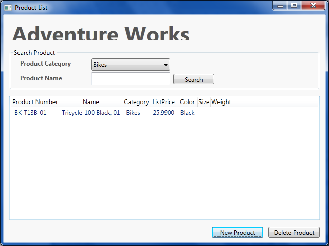
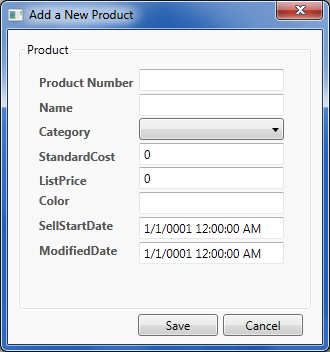

This sample shows a simple ADO.NET Data Service exposing data through the ADO.NET Entity Framework and a WPF application consuming the ADO.NET Data Service.
This sample requires the Adventure Works sample database. For more information, see How to: Install and Troubleshoot Database Components for Samples.
Press F5 (Note: you may need to set the UserInterface project to run by default)
The solution is made up of the following projects:
This project contains the Entity Data Model that we will use as the basis of our ADO.NET Data Service, as well as the service itself.
This project is a user interface implemented in WPF. The entry point for the application is in the code behind file for ProductList.xaml.


namespace DataServicesWebApp
{
public class AdventureWorks : DataService<AdventureWorksLTEntities>
{
/// <summary>
/// This method is called only once to initialize service-wide policies.
/// </summary>
public static void InitializeService(IDataServiceConfiguration config)
{
// TODO: set rules to indicate which entity sets and service operations are visible, updatable, etc.
// Examples:
// config.SetEntitySetAccessRule("MyEntityset", EntitySetRights.AllRead);
// config.SetServiceOperationAccessRule("MyServiceOperation", ServiceOperationRights.All);
// For testing purposes use "*" to indicate all entity sets/service operations.
// "*" should NOT be used in production systems.
// This Sample only exposes the entity sets needed by the application we are building.
// This Sample uses EntitySetRight.All which allows both Read and Write access to the Entity Set.
config.SetEntitySetAccessRule("Products", EntitySetRights.All);
config.SetEntitySetAccessRule("ProductCategories", EntitySetRights.All);
config.SetEntitySetAccessRule("ProductDescriptions", EntitySetRights.All);
config.SetEntitySetAccessRule("ProductModelProductDescriptions", EntitySetRights.All);
config.SetEntitySetAccessRule("ProductModels", EntitySetRights.All);
}
}
}
namespace DataServicesWebApp { public class AdventureWorks : DataService<AdventureWorksLTEntities> { /// <summary> /// This method is called only once to initialize service-wide policies. /// </summary> public static void InitializeService(IDataServiceConfiguration config) { // TODO: set rules to indicate which entity sets and service operations are visible, updatable, etc. // Examples: // config.SetEntitySetAccessRule("MyEntityset", EntitySetRights.AllRead); // config.SetServiceOperationAccessRule("MyServiceOperation", ServiceOperationRights.All); // For testing purposes use "*" to indicate all entity sets/service operations. // "*" should NOT be used in production systems. // This Sample only exposes the entity sets needed by the application we are building. // This Sample uses EntitySetRight.All which allows both Read and Write access to the Entity Set. config.SetEntitySetAccessRule("Products", EntitySetRights.All); config.SetEntitySetAccessRule("ProductCategories", EntitySetRights.All); config.SetEntitySetAccessRule("ProductDescriptions", EntitySetRights.All); config.SetEntitySetAccessRule("ProductModelProductDescriptions", EntitySetRights.All); config.SetEntitySetAccessRule("ProductModels", EntitySetRights.All); } } }
Namespace DataServicesWebApp
Public Class AdventureWorks
Inherits DataService(Of AdventureWorksLTEntities)
''' <summary>
''' This method is called only once to initialize service-wide policies.
''' </summary>
Public Shared Sub InitializeService(ByVal config As IDataServiceConfiguration)
' TODO: set rules to indicate which entity sets and service operations are visible, updatable, etc.
' Examples:
' config.SetEntitySetAccessRule("MyEntityset", EntitySetRights.AllRead);
' config.SetServiceOperationAccessRule("MyServiceOperation", ServiceOperationRights.All);
' For testing purposes use "*" to indicate all entity sets/service operations.
' "*" should NOT be used in production systems.
' This Sample only exposes the entity sets needed by the application we are building.
' This Sample uses EntitySetRight.All which allows both Read and Write access to the Entity Set.
config.SetEntitySetAccessRule("Products", EntitySetRights.All)
config.SetEntitySetAccessRule("ProductCategories", EntitySetRights.All)
config.SetEntitySetAccessRule("ProductDescriptions", EntitySetRights.All)
config.SetEntitySetAccessRule("ProductModelProductDescriptions", EntitySetRights.All)
config.SetEntitySetAccessRule("ProductModels", EntitySetRights.All)
End Sub
End Class
End Namespace
Namespace DataServicesWebApp Public Class AdventureWorks Inherits DataService(Of AdventureWorksLTEntities) ''' <summary> ''' This method is called only once to initialize service-wide policies. ''' </summary> Public Shared Sub InitializeService(ByVal config As IDataServiceConfiguration) ' TODO: set rules to indicate which entity sets and service operations are visible, updatable, etc. ' Examples: ' config.SetEntitySetAccessRule("MyEntityset", EntitySetRights.AllRead); ' config.SetServiceOperationAccessRule("MyServiceOperation", ServiceOperationRights.All); ' For testing purposes use "*" to indicate all entity sets/service operations. ' "*" should NOT be used in production systems. ' This Sample only exposes the entity sets needed by the application we are building. ' This Sample uses EntitySetRight.All which allows both Read and Write access to the Entity Set. config.SetEntitySetAccessRule("Products", EntitySetRights.All) config.SetEntitySetAccessRule("ProductCategories", EntitySetRights.All) config.SetEntitySetAccessRule("ProductDescriptions", EntitySetRights.All) config.SetEntitySetAccessRule("ProductModelProductDescriptions", EntitySetRights.All) config.SetEntitySetAccessRule("ProductModels", EntitySetRights.All) End Sub End Class End Namespace
For more information on Microsoft ADO.NET Data Services:http://social.msdn.microsoft.com/Search/en-US?query=Microsoft ADO.NET Data Services